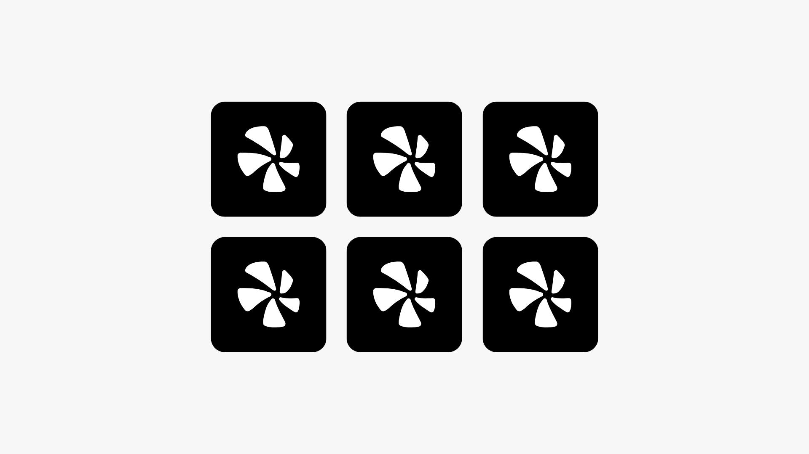
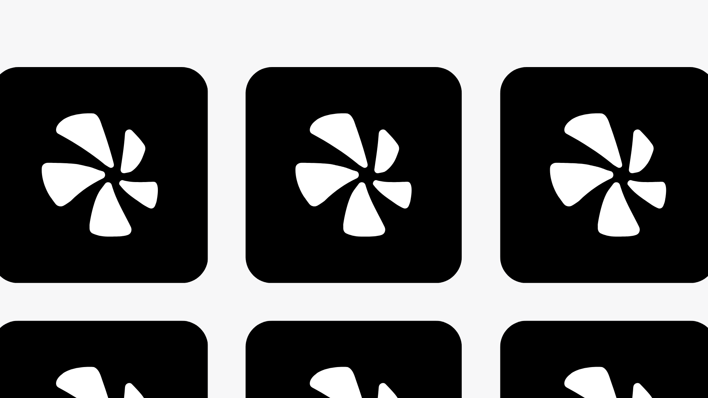

1 훅 · 시작 f0 · 컷 f87 · text-type → cam-pull 끝 (hold-m 시작)

2 격자 · 시작 f120 · 컷 f147 · enter · stagger 열마다 끝 (hold-s 시작)
3 부품 둘레 · 시작 f180 · 컷 f243 · parts-ring 끝 (hold-m 시작)
4 상징 · 빛 · 시작 f276 · 컷 f285 · enter + scale-from 끝 (hold-s 시작)
 5 엔드 · 시작 f333 · 컷 f390 · end-reveal 끝 (hold-end 시작)
1 훅 · 추가 · 시작 f0 · 컷 f36 · text-type 중 · cam-follow (레퍼런스 컷 01 비교)
5 엔드 · 시작 f333 · 컷 f390 · end-reveal 끝 (hold-end 시작)
1 훅 · 추가 · 시작 f0 · 컷 f36 · text-type 중 · cam-follow (레퍼런스 컷 01 비교)

2 격자 · 추가 · 시작 f120 · 컷 f179 · zoom-through 끝 (레퍼런스 컷 02 비교)
레퍼런스 구도 비교 (왼쪽 레퍼런스 · 오른쪽 우리 컷)